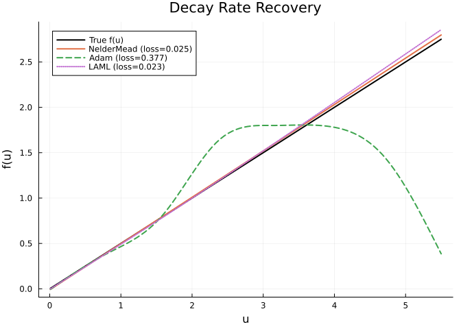
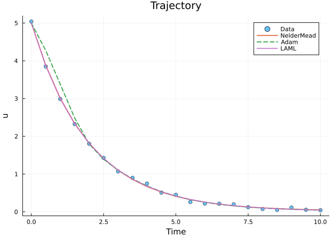
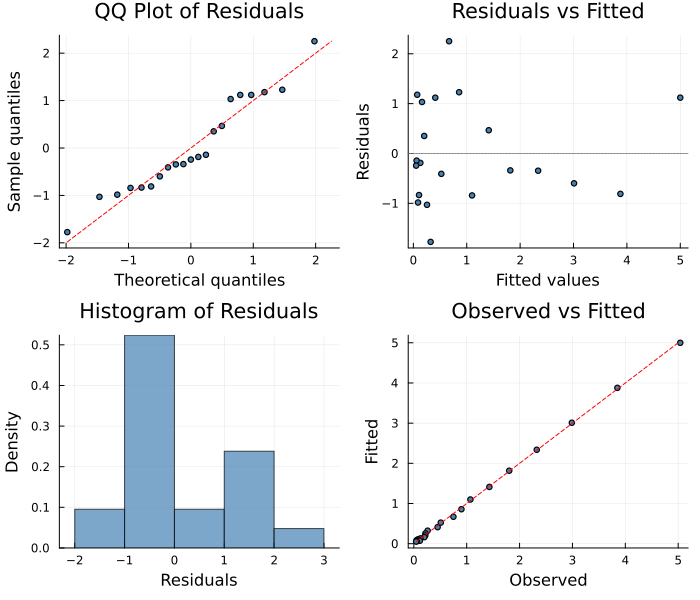

Derivative-Free Optimization
Overview
The DerivativeFreeSolver uses gradient-free optimization (Nelder-Mead or Particle Swarm) to fit partially specified models. This is a robust fallback when gradient-based methods (LAML, Adam) struggle with:
- Stiff or chaotic dynamics that break autodiff
- Non-smooth objectives or discontinuous model behavior
- Poor initial conditions where gradient methods get stuck
The tradeoff is slower convergence — derivative-free methods need more function evaluations — but they can explore the objective landscape more broadly.
using PartiallySpecifiedModels
using OrdinaryDiffEq
using Plots
using Random
Random.seed!(42)TaskLocalRNG()Exponential Decay with Unknown Rate
A simple model: $du/dt = -f(u)$ where $f(u) = 0.5u$ is unknown.
function decay!(du, u, p, t)
du[1] = -p.f(u[1])
end
sol_true = solve(ODEProblem(decay!, [5.0], (0.0, 10.0), (; f=x -> 0.5*x)),
Tsit5(); saveat=0.5)
t_data = collect(sol_true.t)
data_vals = [sol_true.u[i][1] + 0.05 * randn() for i in 1:length(t_data)]
data_matrix = reshape(max.(data_vals, 0.01), :, 1)21×1 Matrix{Float64}:
5.039417780080215
3.8500110179259908
2.9889635616951553
2.325167455020758
1.8042833200179555
1.4288952108579625
1.0699970727636061
0.9004531983252085
0.7486023017326826
0.5092902184958961
⋮
0.21926695332322416
0.21534802822348154
0.19860836555059358
0.12404373603521487
0.07684114721258986
0.05261060443561179
0.11401977466247498
0.056103905895220345
0.04373891053962077Nelder-Mead vs Adam Comparison
uf = BSplineApproximator(:f, (0.01, 5.5), 8)
prob = PSMProblem(decay!, [5.0], (0.0, 10.0), [uf];
data_times=t_data, data_values=Float64.(data_matrix),
obs_to_state=[1], known_params=NamedTuple())
sol_nm = solve(prob, DerivativeFreeSolver(method=:nelder_mead, maxiters=5000, verbose=false))
sol_adam = solve(prob, AdamSolver(lr=0.01, maxiters=3000, verbose=false))
sol_laml = solve(prob, LAML(maxiters=50, verbose=false))PSMSolution((f = [-0.00046259602144854695, 0.3884566171698305, 0.7820057891271729, 1.1858528748033497, 1.5983197770663482, 2.0159403634890536, 2.4355046125552704, 2.855325106307646]), 0.011602380247886207, 0.022573003786302063, 2.7761537831334087, [0.007410256987979062], [5.0; 3.8648069930459954; … ; 0.05472185335690693; 0.04512023646174475;;], [5.039417780080215; 3.8500110179259908; … ; 0.056103905895220345; 0.04373891053962077;;], [0.0, 0.5, 1.0, 1.5, 2.0, 2.5, 3.0, 3.5, 4.0, 4.5 … 5.5, 6.0, 6.5, 7.0, 7.5, 8.0, 8.5, 9.0, 9.5, 10.0], Dict{Symbol, Any}(:f => DataInterpolations.CubicSpline{Vector{Float64}, Vector{Float64}, Vector{Float64}, Vector{Float64}, Vector{Float64}, Vector{Float64}, Float64}([-0.00046259602144854695, 0.3884566171698305, 0.7820057891271729, 1.1858528748033497, 1.5983197770663482, 2.0159403634890536, 2.4355046125552704, 2.855325106307646], [0.01, 0.7942857142857143, 1.5785714285714285, 2.362857142857143, 3.1471428571428572, 3.9314285714285715, 4.715714285714285, 5.5], Float64[], DataInterpolations.CubicSplineParameterCache{Vector{Float64}}(Float64[], Float64[]), [0.0, 0.7842857142857143, 0.7842857142857143, 0.7842857142857145, 0.7842857142857143, 0.7842857142857143, 0.7842857142857138, 0.7842857142857147], [0.0, 0.0062729595140214025, 0.02007084810695473, 0.013894098897316276, 0.008434298054657974, 0.002640046502500769, -3.513034014064171e-5, 0.0], DataInterpolations.ExtrapolationType.Linear, DataInterpolations.ExtrapolationType.Linear, FindFirstFunctions.Guesser{Vector{Float64}}([0.01, 0.7942857142857143, 1.5785714285714285, 2.362857142857143, 3.1471428571428572, 3.9314285714285715, 4.715714285714285, 5.5], Base.RefValue{Int64}(1), true), false, false)), (V_beta = [0.06947765290315472 -0.010976610393425767 … 0.038313210518777126 0.060358878743787536; -0.010976610393425767 0.05214761356002757 … -0.08368632343006809 -0.11207729554835272; … ; 0.038313210518777126 -0.08368632343006809 … 1.7036165814535105 2.6430241510625065; 0.060358878743787536 -0.11207729554835272 … 2.6430241510625065 4.579306609443772], sigma2 = 0.0012386520121866606, converged = true, iterations = 8, reason = :converged_tol, laml_failures = 0, criterion = :working, laml = 61.90902391780751, stationarity = 0.04314549669227589, smoothing_advanced = true))Recovered Function
f_nm = sol_nm.unknown_functions[:f]
f_adam = sol_adam.unknown_functions[:f]
f_laml = sol_laml.unknown_functions[:f]
u_grid = range(0.01, 5.5, length=100)
f_true(u) = 0.5 * u
p1 = plot(u_grid, f_true.(u_grid), label="True f(u)", lw=2, color=:black,
xlabel="u", ylabel="f(u)", title="Decay Rate Recovery")
plot!(p1, u_grid, [f_nm(x) for x in u_grid], label="NelderMead (loss=$(round(sol_nm.data_loss, digits=3)))", lw=2)
plot!(p1, u_grid, [f_adam(x) for x in u_grid], label="Adam (loss=$(round(sol_adam.data_loss, digits=3)))", lw=2, ls=:dash)
plot!(p1, u_grid, [f_laml(x) for x in u_grid], label="LAML (loss=$(round(sol_laml.data_loss, digits=3)))", lw=2, ls=:dot)
p1
Trajectory Fit
p2 = plot(t_data, data_matrix[:, 1], seriestype=:scatter, label="Data",
xlabel="Time", ylabel="u", title="Trajectory", ms=4, alpha=0.6)
plot!(p2, t_data, sol_nm.fitted_values[:, 1], label="NelderMead", lw=2)
plot!(p2, t_data, sol_adam.fitted_values[:, 1], label="Adam", lw=2, ls=:dash)
plot!(p2, t_data, sol_laml.fitted_values[:, 1], label="LAML", lw=2, ls=:dot)
p2
Particle Swarm for Global Search
Particle swarm optimization explores more broadly and can escape local minima:
sol_ps = solve(prob, DerivativeFreeSolver(method=:particle_swarm, maxiters=5000,
n_particles=20, verbose=false))
f_ps = sol_ps.unknown_functions[:f]
println("NelderMead: loss=$(round(sol_nm.data_loss, digits=4)), f(3)=$(round(f_nm(3.0), digits=3))")
println("ParticleSwarm: loss=$(round(sol_ps.data_loss, digits=4)), f(3)=$(round(f_ps(3.0), digits=3))")
println("True: f(3)=$(round(f_true(3.0), digits=3))")NelderMead: loss=0.0248, f(3)=1.519
ParticleSwarm: loss=0.7212, f(3)=1.27
True: f(3)=1.5Diagnostic Plots
A standard 4-panel diagnostic display assesses residual behaviour. The QQ plot checks normality of standardized residuals, “Residuals vs Fitted” detects systematic patterns, the histogram visualises the residual distribution, and “Observed vs Fitted” checks overall calibration.
using PartiallySpecifiedModels: appraise
diag = appraise(sol_nm)
p_qq = scatter(diag.qq_theoretical, diag.qq_sample,
xlabel="Theoretical quantiles", ylabel="Sample quantiles",
title="QQ Plot of Residuals", ms=3, legend=false, color=:steelblue)
mn, mx = extrema(vcat(diag.qq_theoretical, diag.qq_sample))
plot!(p_qq, [mn, mx], [mn, mx], color=:red, ls=:dash, label="")
p_rf = scatter(diag.fitted, diag.residuals,
xlabel="Fitted values", ylabel="Residuals",
title="Residuals vs Fitted", ms=3, legend=false, color=:steelblue)
hline!(p_rf, [0], color=:gray, ls=:dot)
p_hist = histogram(diag.residuals, normalize=:pdf,
xlabel="Residuals", ylabel="Density",
title="Histogram of Residuals", legend=false, color=:steelblue, alpha=0.7)
p_of = scatter(diag.observed, diag.fitted,
xlabel="Observed", ylabel="Fitted",
title="Observed vs Fitted", ms=3, legend=false, color=:steelblue)
mn2, mx2 = extrema(vcat(diag.observed, diag.fitted))
plot!(p_of, [mn2, mx2], [mn2, mx2], color=:red, ls=:dash, label="")
plot(p_qq, p_rf, p_hist, p_of, layout=(2, 2), size=(700, 600))
Durbin-Watson: 2.031When to Use DerivativeFree
- Robustness: Works when autodiff fails (stiff systems, discontinuities)
- Global search: Particle swarm can find solutions that gradient methods miss
- No gradients needed: Useful for complex models where ForwardDiff is prohibitively expensive
- Tradeoff: Slower convergence — needs 5-10× more function evaluations than gradient methods
- Best for low-dimensional parameter spaces (\< 50 parameters)